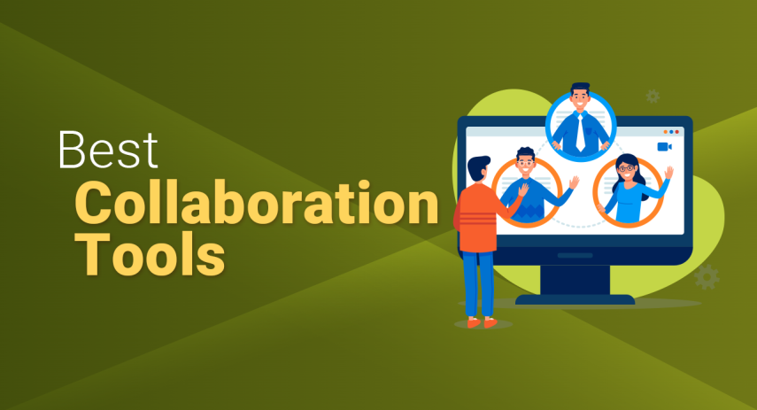
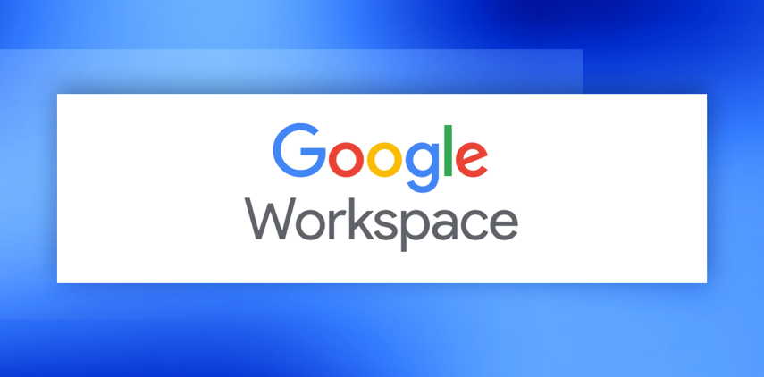
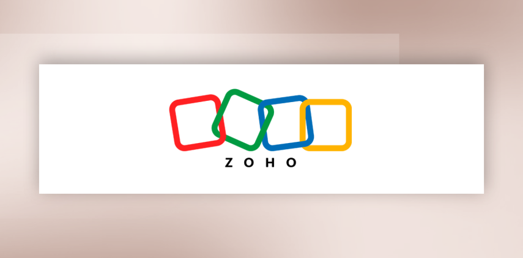

Best Collaboration Tools
James McGill | Updated on November 12th 2024Privacy and Technology Consultant In a hurry? Here’s the top collaboration tool for 2025:
In 2025, as businesses continue to adapt to remote and hybrid work models, the need for effective collaboration tools has become essential for maintaining team cohesion and productivity. The challenges of coordinating dispersed teams, ensuring smooth communication, and managing projects across different time zones underscore the importance of investing in the right tools to keep everyone aligned.
In this guide, we present the top collaboration solutions tailored for today’s business needs, ranging from powerful productivity suites and secure office platforms to specialized communication tools that keep teams connected in real-time. Each tool we recommend is designed to improve workflow efficiency, facilitate seamless information sharing, and enhance project management, making it easier to achieve your business goals with a cohesive team effort.
Dive into our comprehensive selection to discover the best collaboration tools for your organization, whether you're seeking an all-in-one office suite, advanced task management tools, or flexible communication platforms. For more insights, refer to our FAQ section below, where we answer common questions to help you make the right choice for your team’s unique needs.
An overview of the best collaboration tools for 2025:
- 🥇 1. Google Workspace — Google Workspace offers a powerful suite of collaboration tools tailored for today’s flexible work environment, making it easy for teams to communicate, share, and manage projects in real time—whether they’re in the office or working remotely.
- 🥈 2. Zoho Workplace — Zoho Workplace offers a unified suite of secure, integrated tools for communication, collaboration, and productivity, minimizing app-switching and enhancing team efficiency.
- 🥉 3. OnlyOffice Workspace — Onlyoffice lets you streamline all your business processes by organizing and storing documents, managing tasks, projects, schedules, sales, and customer data, and facilitating seamless communication through chats, forums, and more.
- Frequently Asked Questions about collaboration tools (FAQ).
In today’s hybrid and remote work environment, collaboration is essential for workplace success. Studies highlight that teams encouraged to collaborate stay focused 64% longer, feel more engaged, experience less fatigue, and achieve better outcomes than those working alone. Yet, with more employees working from various locations and time zones, effective collaboration faces new challenges.
That’s where online collaboration tools come into play. These digital solutions act as a secure hub, bringing together employees, partners, and clients in one place to work towards shared goals, regardless of where they are. But before exploring why these tools are essential, let’s first understand what online collaboration really means.
What Is a Collaboration Tool?
A collaboration tool is a type of application software that enables users to work together and share knowledge online. Modern collaboration tools offer a wide range of features, including virtual meeting and video conferencing, file sharing, and even AI-powered assistance to enhance productivity. These tools support teamwork through document management, shared calendars, task management, surveys, and online forums. Some focus primarily on document sharing, while others provide a full suite of capabilities. The best collaboration tool for your needs will depend on the specific goals and requirements of your team.
What are the advantages of online collaboration tools?
Online collaboration tools bring numerous benefits to teams, enhancing efficiency, communication, and overall satisfaction. Here’s a closer look at some key advantages:
Save Time and Resources - Online collaboration tools can dramatically cut down time spent on administrative tasks such as managing emails and collecting information. For instance, when the engineering firm AECOM implemented real-time document collaboration software, their team could work on shared documents simultaneously, streamlining feedback processes and reducing the need to manually merge comments from emails. This shift saved them considerable time and resources, which they could then devote to more strategic initiatives.Increase Productivity - By streamlining work processes and automating routine tasks, online collaboration tools free up time for more meaningful work. Rather than spending hours collecting feedback from team members, you can focus on enhancing your contributions and developing new ideas that digital tools can’t replace.Improve Communication - Online collaboration tools foster better communication, especially for teams working remotely or across locations. They ensure that updates and project details are shared effectively, reducing the chances of missed information and helping everyone stay aligned, regardless of where they are working.Facilitate Remote Collaboration - Online collaboration tools make it easy for remote teams and external partners to work together smoothly, regardless of location. For example, during the Mars 2020 Rover mission, NASA scientists across various research centers used digital collaboration platforms to share data, insights, and findings in real-time, allowing them to progress without in-person meetings. These tools not only support efficient remote work but also contribute to environmental sustainability and cost savings by reducing travel needs—similar to how the United Nations adopted digital collaboration software for virtual meetings, minimizing travel and logistical expenses.Boost Team Morale - By enabling flexible and efficient work, online collaboration tools can enhance employee satisfaction. When work is visible and recognized—rather than lost in email threads—employees feel more appreciated. These tools also encourage knowledge-sharing and spark creativity, leading to better engagement, higher morale, and a more productive team.Now that you’re familiar with the benefits of collaboration tools, let’s explore our top three recommendations.
1. Google Workspace — Best for shared workspace collaboration

Google Workspace offers you a complete suite of tools designed to boost your productivity and streamline collaboration within your business. With popular applications like Gmail, Google Drive, Docs, Sheets, and Meet all integrated under one platform, you’ll find everything you need to communicate effectively, share and edit documents in real-time, and keep your files organized. This seamless integration across tools allows you to switch tasks smoothly, helping you stay focused on your work without unnecessary interruptions.
Unlike other collaboration tools, Google Workspace keeps everything within Google’s ecosystem, giving you a unified experience that’s hard to beat. For instance, when you create documents in Google Docs, Sheets, or Slides, they’re automatically saved and synced to Google Drive, ensuring security and easy access from any device. With advanced security features, such as two-step verification and data encryption, your business data is protected at every level. And thanks to Google’s AI integration, you’ll have access to smart suggestions, automated scheduling, and powerful data analysis features within Sheets, allowing you to work smarter, not harder.
In short, Google Workspace provides you with a powerful, user-friendly productivity suite that combines essential business tools with top-notch security and innovative AI features. Whether you’re a small business or a large enterprise, Google Workspace adapts to meet your unique needs, enhancing your team’s productivity and making collaboration easier than ever. It’s a flexible, scalable solution that ensures you and your team can stay organized, connected, and efficient.
Get Google Workspace - Boost your team's productivity!
2. Zoho Workplace — Best tool for video and screen-sharing

Zoho Workplace is a powerful suite of nine productivity applications that’s ideal if you're looking to streamline your business tasks into one unified, cloud-based workflow. You'll find tools for email, messaging (Cliq), and conferencing (Meeting), all of which integrate seamlessly with other Zoho products like Projects, Bookings, and CRM, giving you a cohesive user experience. With features like TrueSync, managing files across your team becomes more straightforward, while Connect serves as a social intranet, and Writer, Sheet, and Show handle your core office needs. Enhanced document management through WorkDrive brings improved search capabilities and an efficient admin panel to help you oversee your data through Zoho Directory.
Zoho has put great care into creating a user-friendly interface and dashboard, making the suite competitive with other major software solutions. Its cloud-based infrastructure keeps everything well-connected and efficient, offering you a cost-effective way to manage various aspects of your business in one place. Plus, Zoho Workplace backs you up with robust support options through Zoho Cares and a three-tier system (Classic, Premium, and Enterprise) for assistance. You’ll also have access to a comprehensive Knowledge Base and a searchable database of help articles. Overall, Zoho Workplace is a versatile, all-in-one solution that could make managing your business’s productivity tasks easier and more efficient.
Zoho Workplace effectively fills remaining gaps in Zoho's extensive lineup of business software, offering a feature-rich, productivity-focused suite that provides great value for companies. With over 45 applications and a track record of innovation, Zoho continues to build tools that are easy to use and versatile. If you're open to exploring alternatives beyond the big-name software brands, Zoho Workplace—and other Zoho programs—are well worth considering for your business needs.
Get Zoho Workplace - Boost your team's productivity!
3. OnlyOffice Workspace — Full-Service Office Suite for Professionals
ONLYOFFICE has emerged as a strong contender in the office software market, offering a versatile suite of tools for document creation, collaboration, and management. Its editors for documents, spreadsheets, and presentations provide seamless compatibility with Microsoft Office formats, making it an appealing option for businesses transitioning between platforms. The suite integrates smoothly with popular cloud storage solutions, offering flexibility for remote and hybrid teams, while its robust security features, including end-to-end encryption, ensure data protection. ONLYOFFICE’s focus on real-time co-editing and customizability makes it particularly well-suited for businesses seeking streamlined workflows and enhanced productivity.
Beyond its core productivity tools, ONLYOFFICE offers integration options with popular platforms like Nextcloud, ownCloud, and Google Drive, creating a connected workspace that adapts to various business ecosystems. Its self-hosted solution provides an added layer of control for companies prioritizing data privacy. The suite’s modular structure enables teams to tailor their experience by adding or removing features as needed, ensuring scalability for businesses of all sizes. With its user-friendly interface and emphasis on collaboration, ONLYOFFICE delivers a modern alternative to traditional office software.
ONLYOFFICE is a comprehensive, flexible office suite that excels in real-time collaboration and secure document management. With compatibility across devices and integration with leading cloud platforms, it caters to businesses seeking a fully adaptable and privacy-focused digital workspace. Its scalable, feature-rich ecosystem makes it a reliable choice for organizations of any size looking to streamline their productivity tools.
Get OnlyOffice Workspace - Boost your team's productivity!
How Did We Decide on Our Top Collaboration Tools for 2025?
Choosing the right collaboration tool for your team can be challenging, with so many options and a range of features to consider. From team size and communication style to security needs and integrations, the right tool should enhance your team’s productivity and streamline your workflows. Sound like a lot to figure out? Don’t worry; our team has done the work to help you find a collaboration tool that’s a perfect fit for your business. When ranking the best collaboration tools on the market, we focused on the following questions:
- Does it offer key collaboration features?
- How intuitive is it to use?
- Is it customizable to meet specific team needs?
- Does it scale well as your team grows?
- Is it compliant with security standards like GDPR?
- What’s the cost for different team sizes?
- How well does it integrate with other tools?
- What kind of support and resources are available for setup and troubleshooting?
Best Collaboration Tools - Frequently Asked Questions
🖥 What are collaboration tools?
Collaboration tools are like a digital whiteboard in your conference room, where your team can gather ideas, brainstorm, and work together seamlessly, regardless of location. These tools create a shared space where team members can contribute and collaborate in real time, enhancing productivity and efficiency.
There are three main types of collaboration tools, each serving a unique purpose. Communication tools facilitate team interaction, including options like email, voicemail, instant messaging, and VoIP or video calls. Coordination tools help organize tasks and time, with features such as online calendars, time trackers, and shared spreadsheets. Finally, cooperation tools support teamwork on projects, often using video conferencing and teleconferencing to bring people together virtually. Together, these tools provide a comprehensive digital platform for effective collaboration.
🏢 What benefits do collaboration tools offer businesses?
Collaboration tools bring a range of advantages to businesses. They enhance security, reduce the need for travel, consolidate multiple functions into a single platform, and enable real-time document collaboration. Additionally, these tools can drive productivity gains, with teams often seeing efficiency improvements of up to 20%.
📣 How can collaboration tools enhance team communication?
To improve team communication with collaboration tools, start by creating a space where everyone can work comfortably. Foster essential collaboration and teamwork skills among team members to strengthen their ability to work together effectively. Share all necessary resources, assign tasks, and maintain quality standards to enhance productivity. Effective communication is key, so ensure that team members feel encouraged to share ideas openly in a supportive environment. Keep the team focused on objectives and outcomes to stay aligned on the current tasks.
👥 How do collaboration tools support remote teams?
Collaboration tools are essential for remote teams, enabling real-time communication and teamwork across locations. With features like video conferencing, chat, document sharing, and project tracking, these tools keep teams connected and engaged. Instant messaging and video call options allow for quick interactions, while task management platforms help organize tasks and deadlines. These tools empower remote teams to stay productive, minimize miscommunication, and build a cohesive team culture, no matter where they are working.
📊 What are the benefits of cloud-based collaboration tools?
Cloud-based collaboration tools offer significant benefits. They can be accessed from anywhere with an internet connection, making them ideal for distributed teams. They also come with robust security measures from top vendors to keep data safe. Additionally, cloud tools often feature version control, helping teams stay organized and avoid confusion over multiple document versions.
🔐 What security features do collaboration tools offer?
Security is a top priority for collaboration tools, as they often manage sensitive data. Most reputable platforms offer data encryption, multi-factor authentication, and compliance with global standards like GDPR and HIPAA. Some tools also offer role-based access control, so team members only see information relevant to their roles. It's essential to choose a tool that provides these protections to keep your business information secure and maintain client trust.
💰 What are the pricing models for collaboration tools? Are there free options?
Collaboration tools generally offer a range of pricing models to suit different team sizes and needs, from free versions for small teams to comprehensive enterprise-level plans. Free plans typically cover essential features, making them ideal for startups or smaller teams that need basic functionality. Paid plans, available as monthly or annual subscriptions, offer advanced options such as expanded storage, premium support, and detailed reporting capabilities. These tiered pricing models allow businesses to choose a plan that aligns with their budget and feature requirements, with options to scale as their needs grow.
🌎 Can collaboration tools be customized and scaled for growing businesses?
Most collaboration tools are designed to be both flexible and scalable. Many offer options for creating custom workflows and adaptable project templates, allowing teams to tailor the tools to their specific processes. Additionally, these tools provide scalable pricing plans, enabling teams to upgrade as their needs expand. This adaptability makes them suitable for organizations of all sizes, from small businesses to larger enterprises, supporting evolving collaboration strategies over time.
Transparency and Trust: The aim of this website is to help you find the perfect software for your needs in an easy-to-view comparison list. You can read more about how we review and about our background in the About Us section of this website. Software.fish does not feature all of the software available in the market, we cherry-pick what we consider to be the leaders in each vertical. We try to keep this site updated and fresh, but cannot guarantee the accuracy of the information as well as the prices featured at all times. All prices quoted on this site are based on USD so there could be slight discrepancies due to currency fluctuations. Although the site is free to use, we do earn commissions from the software companies that we have partnered with. If you click on one of our links and then make a purchase, we will get paid by that company. This has an impact on the ranking, score, and order in which the software is presented in our list and elsewhere throughout the site. Software listings on this page DO NOT imply endorsement.